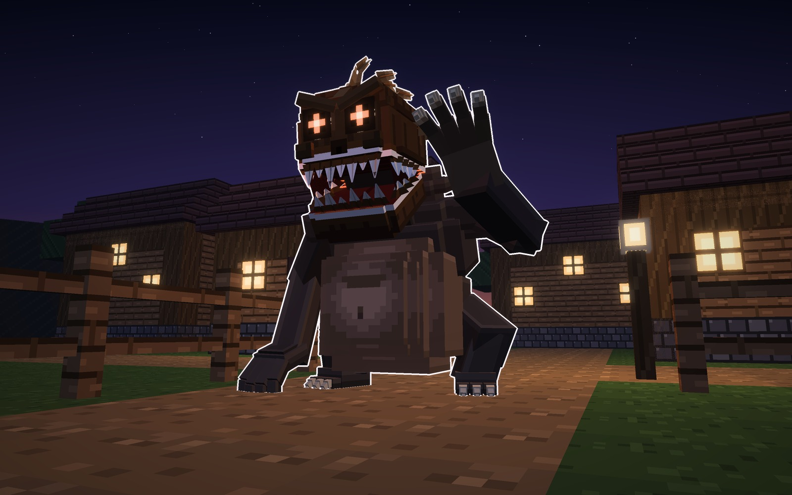
Atalaya · mob que hace algo · 16-10-2026
El Coco
El mob que te mete en la barriga y te va quitando vida poco a poco. Si tienes a alguien
cerca que lo mate, sales; si estás solo, te mata. Es el Coco de la nana («duérmete niño, duérmete ya, que
viene el Coco y te comerá»), pero nuestro.
Como pediste: la barriga no es translúcida. Cuando tiene a alguien dentro, encima del Coco
sale un aviso con el icono de alerta, debajo el nombre del jugador y debajo «¡ha sido atrapado!».
Lo ves en las fotos del Glotón y de la Nana.
De dónde sale
- La leyenda no le da forma. Lo que cuenta es que el coco, la fruta, se llama así por él: los marineros
vieron en sus tres agujeros la cara del monstruo.
- Su cabeza es una cáscara de coco, dura, con los tres agujeros: los dos ojos, hondos, con una brasa al
fondo, y el de la nariz. Las aristas del coco bajan hasta el ceño.
- Al abrir la boca se parte de lado a lado, como un coco roto. Lo blanco del canto es la carne del coco, y
esa carne son sus dientes, partidos y de largos distintos.
- El cuerpo es pesado y encorvado, con la giba, las piernas cortas y arqueadas, unos brazos larguísimos y
manos de cuatro dedos con garras de cuerno, para agarrarte. Delante lleva la barriga: grande y colgante.
Mide unos 2,9 bloques de alto. No se parece a ninguno de los que ya tenemos: el Trasgo es flaco, el
sapo de las Guaridas tiene la boca de lado a lado y el Slime es gelatina.
Qué hace el Coco
- Te ve y viene a por ti, andando encorvado, con una mano en el suelo.
- Te agarra si estás a 2 bloques. Antes tienes 1 segundo de aviso: alza las manos y abre la cáscara.
- Te traga. Desapareces dentro de su barriga, que se le hincha. Encima del Coco sale el aviso, para que los
demás sepan que estás dentro.
- Dentro pierdes vida poco a poco, y la armadura no te protege. Desde dentro no puedes pegarle.
- La única forma de salir es que alguien lo mate. Cuando muere, la barriga revienta y caes fuera.
½ corazón / 2 slo que quita dentro
40 shasta matarte con la vida llena
20 corazonessu vida
1 a la vezno traga a dos
Por ahora solo sale con su huevo. Como los otros, todavía no aparece
solo en el mundo.
Los tres son el mismo mob, en la misma pose de acecho. Cambia lo que lleva en la cabeza, el color y lo
que hace antes o después de tragarte.
A · el Glotón · el de siempre
El Glotón: te traga y se queda a digerirte
- Cáscara parda con una cresta de estopa (la fibra del coco) de punta, y más estopa por la giba. Cuerpo
de carbón, barriga de carne y ojos de brasa.
- Lo que hace: te agarra, te traga y se queda quieto haciendo la digestión. Si alguien viene a
salvarte, se defiende a manotazos.
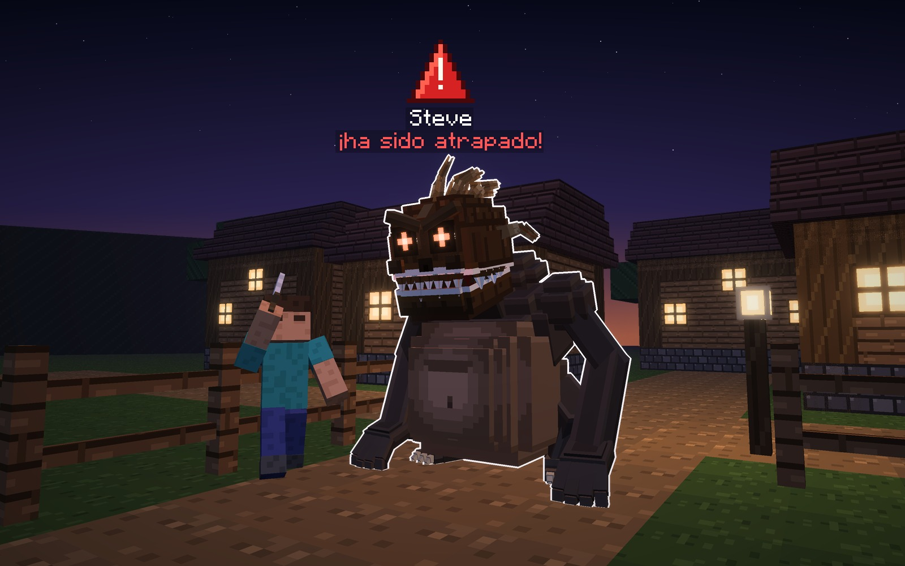
Su forma
- Cabeza
- cáscara parda con cresta de estopa
- Cuerpo
- carbón, barriga de carne
- Ojos
- brasa
Señas
- La cresta, de punta.
- Se queda quieto con el jugador dentro.
B · el del Saco · el que huye
El del Saco: te traga y se te lleva
- Cáscara de hueso pálido bajo una capucha de arpillera, que le enmarca la cara y acaba atrás en un pico
atado con una cuerda. Una capa de arpillera le cae por la espalda. La barriga va cosida como un saco, con
un remiendo. Ojos de azufre. Es el hombre del saco y el Coco a la vez.
- Lo que hace: te traga y huye de los demás jugadores, corriendo más que andando, para comerte
lejos de todos. A tus amigos les toca perseguirlo.
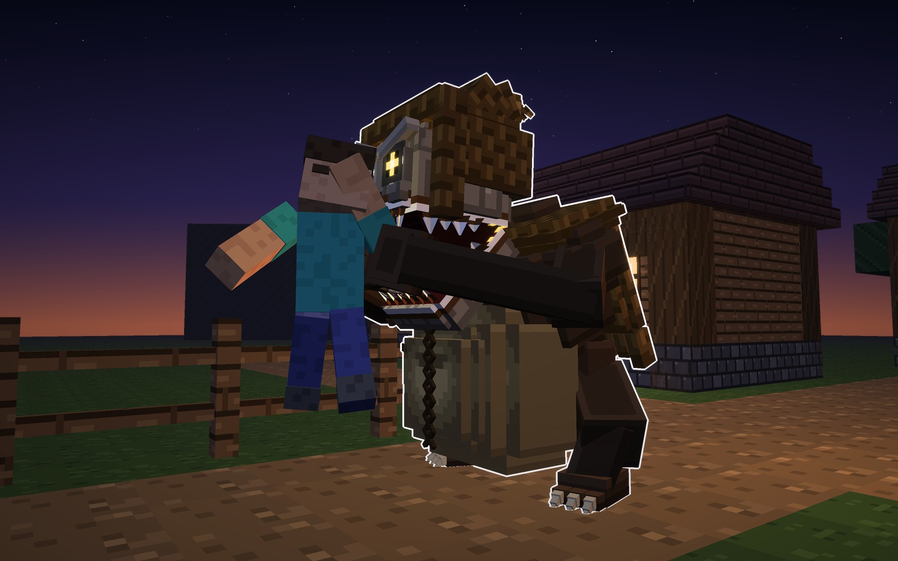
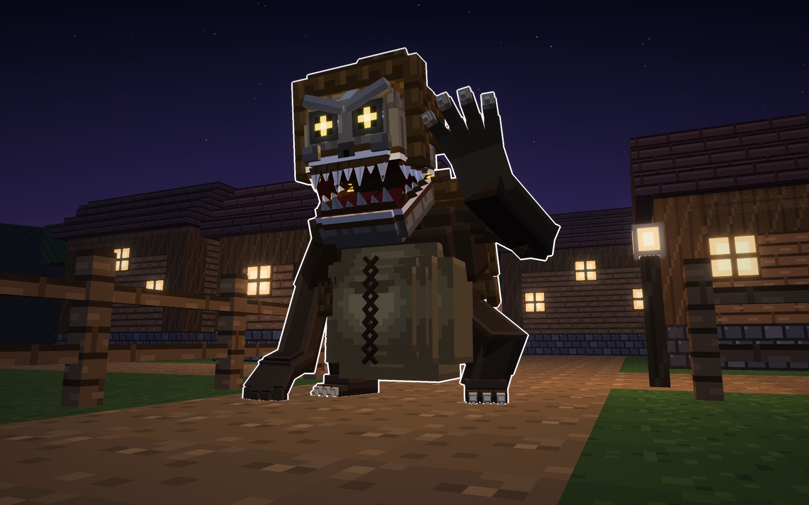
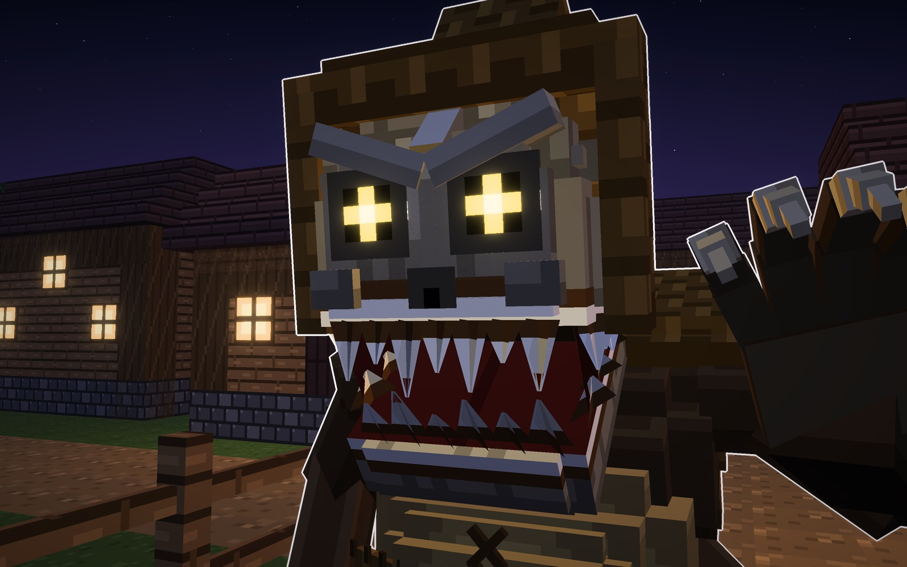
Su forma
- Cabeza
- cáscara pálida bajo capucha
- Cuerpo
- pardo, capa y barriga cosida
- Ojos
- azufre
Señas
- La capucha con el pico atado.
- Huye con el jugador dentro.
C · el de la Nana · el que canta
El de la Nana: te duerme y luego te traga
- Cáscara negra y alta, como una calabaza de agua, con hileras de agujeros que brillan: por ahí silba la
nana. Barba de estopa. Cuerpo verde de musgo y ojos lilas.
- Lo que hace: antes de acercarse silba la nana. Quien la oye a menos de 8 bloques se adormece: va
más lento y se le cierra la vista por los bordes. Entonces te traga.
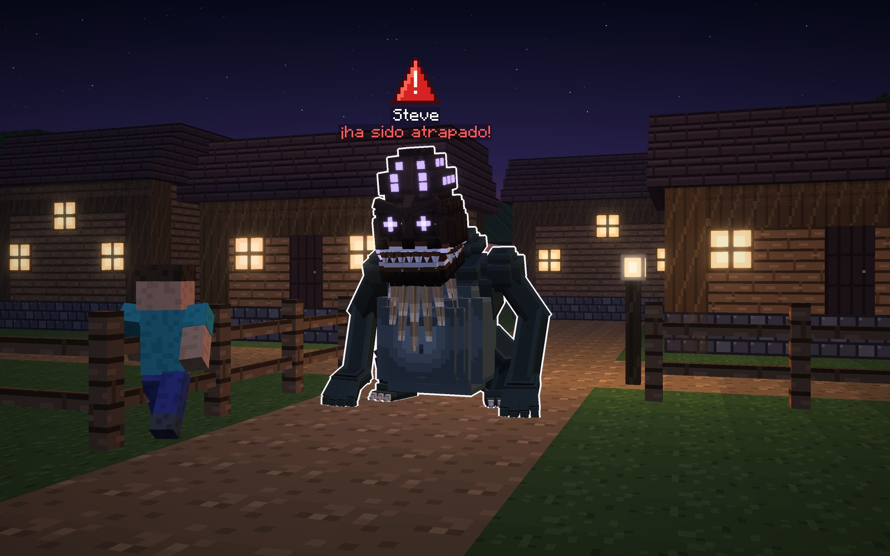
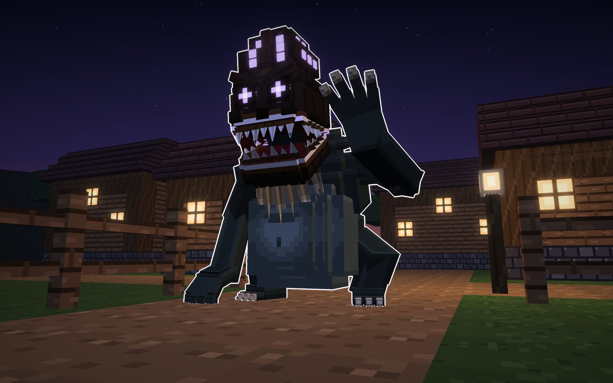
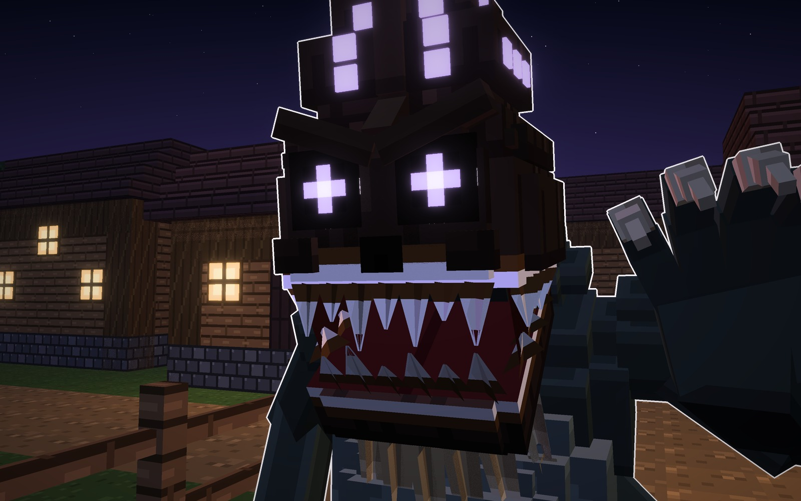
Su forma
- Cabeza
- cáscara negra y alta, con agujeros
- Cuerpo
- musgo, barba de estopa
- Ojos
- lila
Señas
- Los agujeros encendidos de la cáscara.
- Adormece antes de tragar.
Los tres, con un jugador
En el camino de la aldea, junto a un jugador (1,8 bloques): el Glotón, el del Saco y el de la Nana.
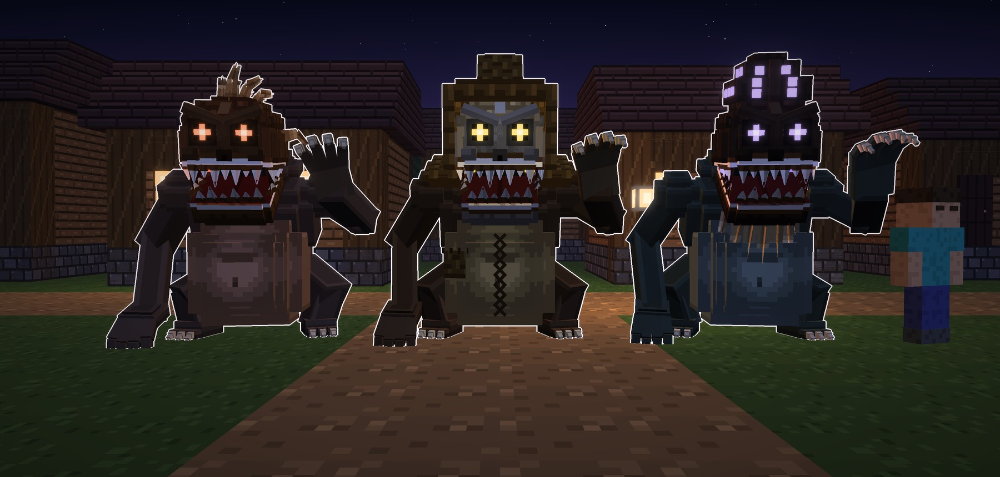
Los materiales
Una fila por tipo: la cáscara (con sus vetas), el diente de carne de coco, el ojo (el agujero con la
brasa), la piel, la barriga (con la luz en el centro y el ombligo) y lo de cada uno: la estopa de la cresta, la
arpillera de la capucha y la barba.
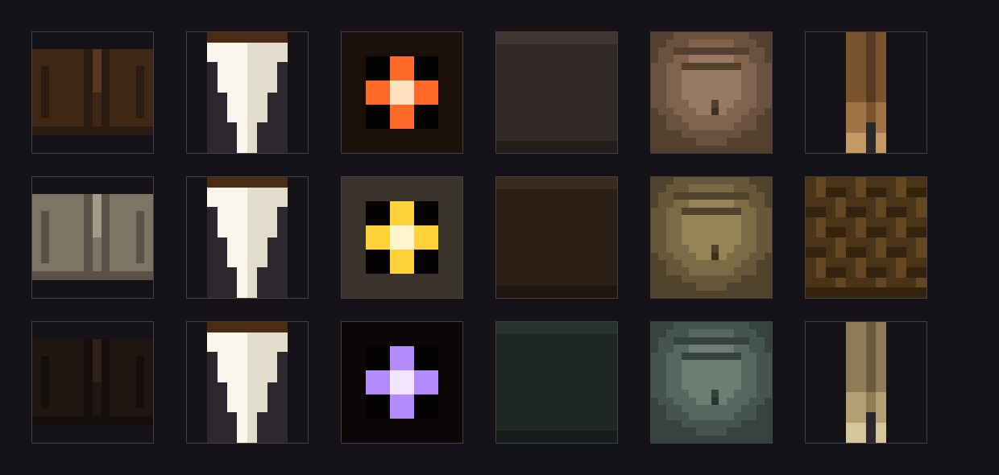
En el juego
El Glotón ya está en el mod, con su huevo. A la izquierda, al acecho; en medio, con un jugador dentro
y el aviso encima (visto desde fuera); a la derecha, lo que ve el de dentro: la pantalla roja con el latido, y sus
corazones bajando.
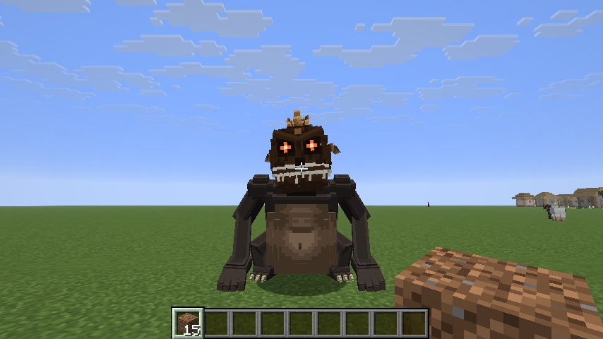
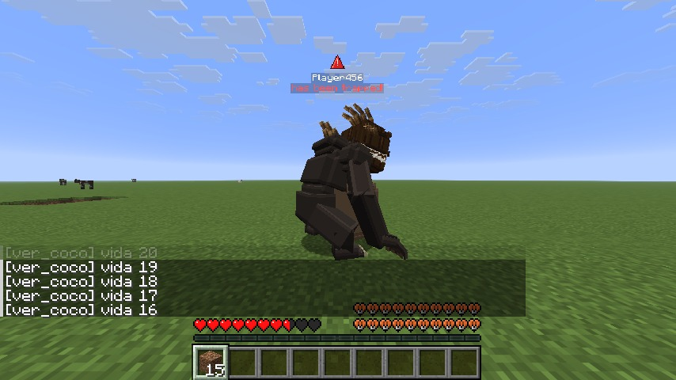
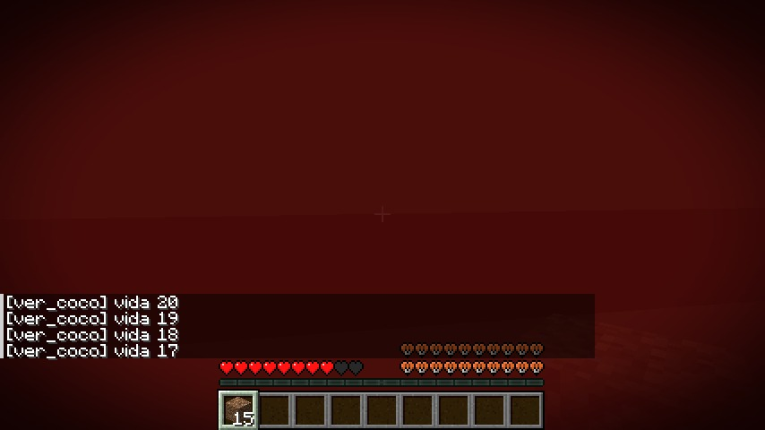
Veredicto de Juan
- 16-10-2026, durante el diseño: «no quiero panza translúcida, sino que, si ha tragado a un jugador, arriba del
mob salga el nombre de la persona y diga ¡ha sido atrapado!, y un icono de alerta».
- Con la ficha: «haz el diseño 1 con todas sus animaciones, huevo, etc.». El Glotón está en el juego; el
del Saco y el de la Nana se quedan en la ficha.
- Lo que quedaba por decidir se hizo como se proponía: medio corazón cada 2 segundos sin armadura, el aviso a 48
bloques y a través de las paredes, la pantalla roja con el latido, y el nombre, el Coco.
Bocetos de coco_modelo.py y coco_escenas.py (materiales/generadores). En el juego: coco_juego.py (la
malla, la textura, el huevo y el icono del aviso) y coco_sonidos.py. Las fotos van sin letras: lo único escrito es el
aviso, que es del juego.